Hotel Riu Palace Zanzibar
Birthplace of Freddie Mercury. Turquoise Indian Ocean. Two nights that felt like a week.
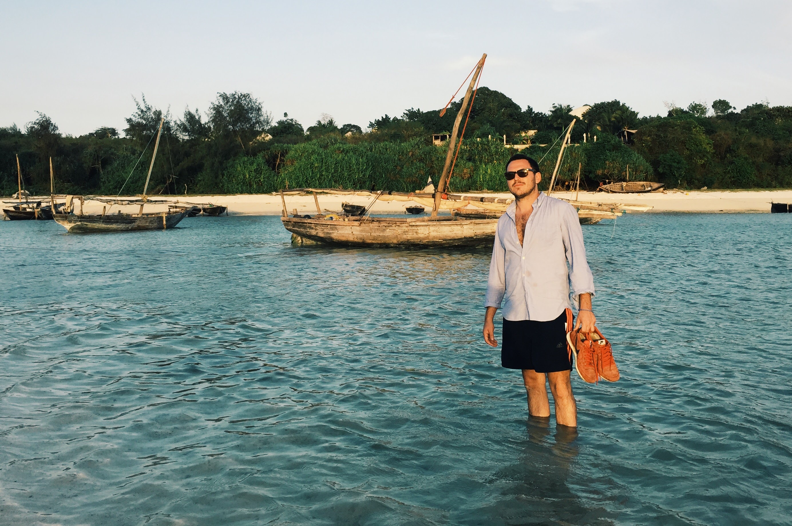
Zanzibar is one of those places that stays on the bucket list for too long. Spice island off the coast of Tanzania, Swahili culture, Arab trading history, birthplace of Freddie Mercury. If you have a chance to go, go.
I ended up here on the back of a work trip to Tanzania — a few spare days and someone said, well, Zanzibar is right there. We booked two nights at what was then called the Hideaway of Nungwi Resort & Spa, now rebranded as Hotel Riu Palace Zanzibar, at the island's northern tip. Some of the best two nights of any trip I can remember.
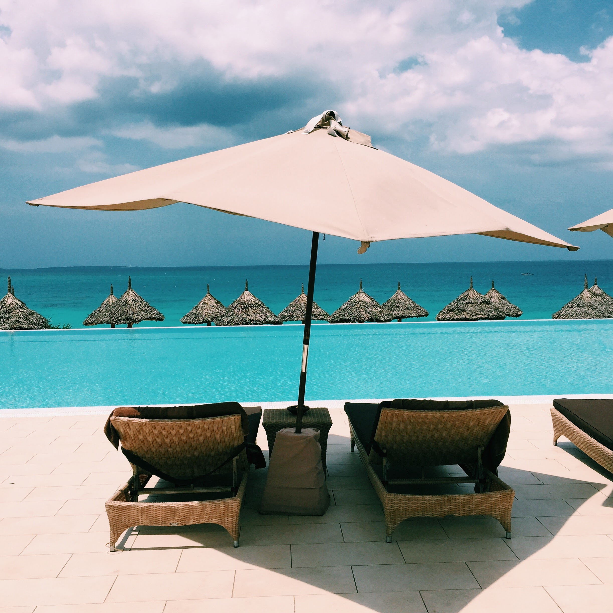
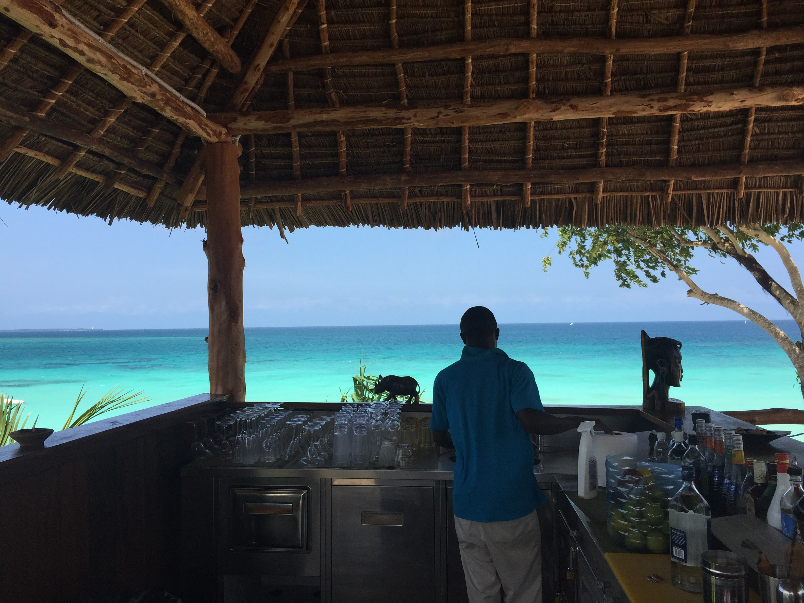
The hotel sits on a clifftop above the beach. Infinity pool, white sand below, water that is genuinely that turquoise — not a filter, just the Indian Ocean. You walk straight in. No waves. The sea floor is soft and it's as warm as a bath.
We spent most of the time between the beach bar and the water. The bar is under a big thatched roof on the cliff edge — cold Kilimanjaro beers, full spirits set-up, that view. Hard to leave.
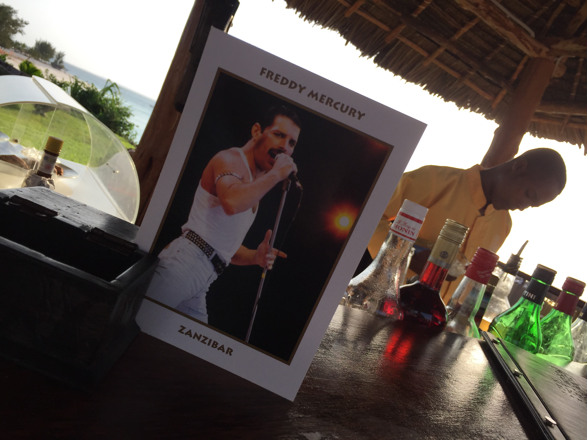
No visit to Zanzibar is complete without acknowledging the island's most famous son. Farrokh Bulsara was born in Stone Town in 1946 — he became Freddie Mercury, and the place knows it. You'll see his face on menus, on walls, in bars. Our beach bar had a little Freddie card propped up by the bottles. Felt right.
Stone Town is worth a day if you can swing it — the old city is a UNESCO World Heritage Site and genuinely atmospheric. But Nungwi itself has its own thing going on: a real fishing village at one end, resorts like this one at the other, and beautiful wide beaches in between. Walk far enough and the resort energy drops away entirely.
"Some of the best two nights of any trip I can remember. Lock it down and just go."
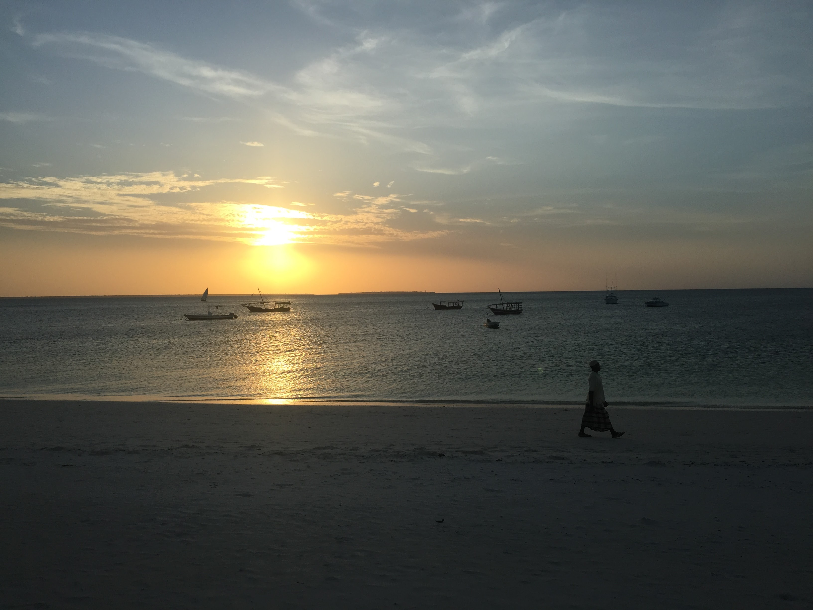
The resort is well kept — Moorish archways, good gardens, bougainvillea everywhere. Since Riu took it over it's probably only gotten better. The pool at night with the lights reflecting is a good image to go to sleep on.
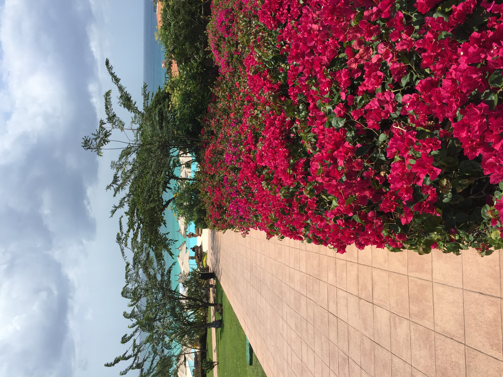
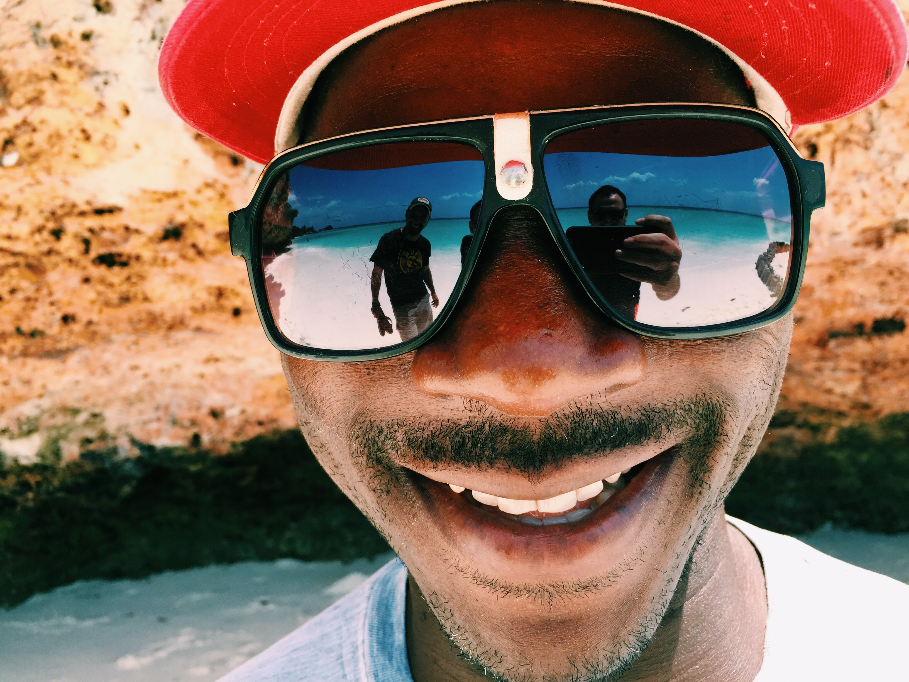
Nungwi is a real working village — fishing boats in the morning, market sets up, life carries on alongside the resort end. Worth walking down the beach past the hotel strip to get a feel for it.
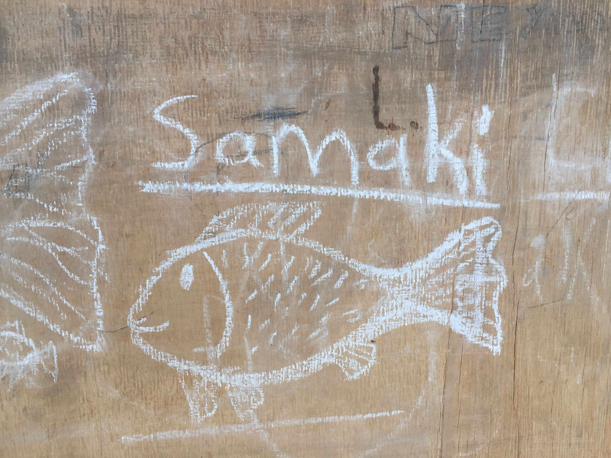
The hotel I stayed at was called Hideaway of Nungwi Resort & Spa when I visited — it's now been rebranded as Hotel Riu Palace Zanzibar, same location, same stretch of clifftop. From what I can see it's only gotten better under Riu. If you're in Tanzania and have even two spare days, this is where to spend them.
Bonus tip within the tip: Samaki means fish in Swahili. Worth knowing when you're trying to order dinner.
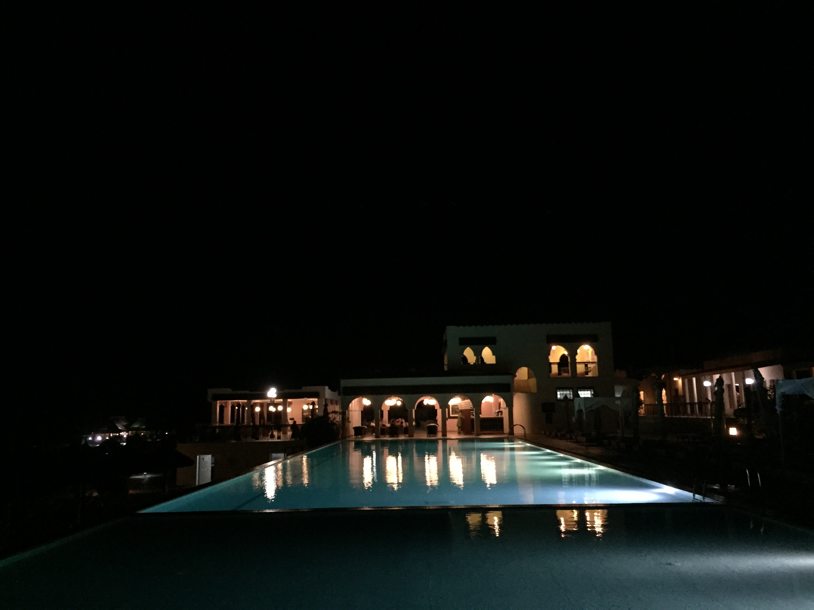
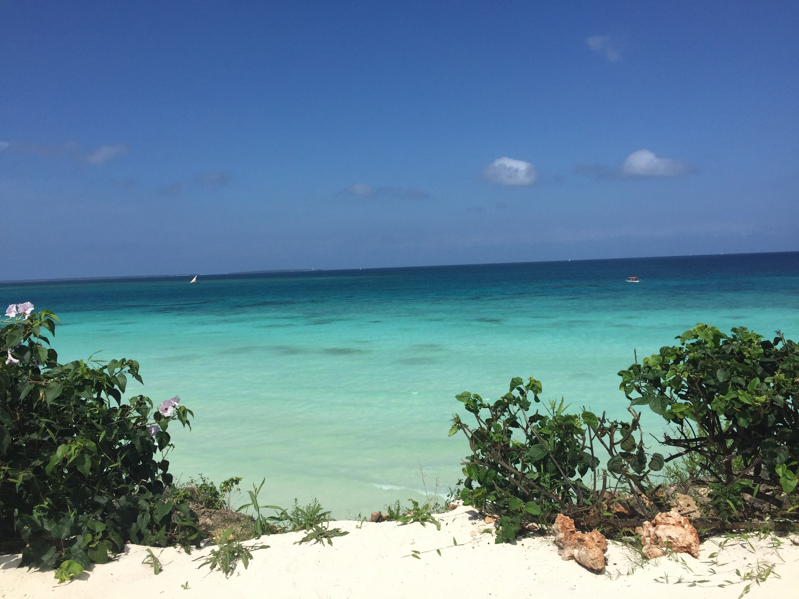
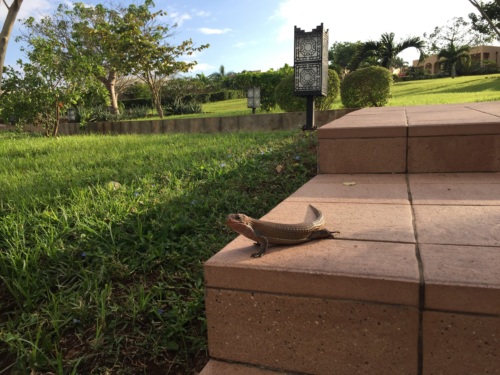
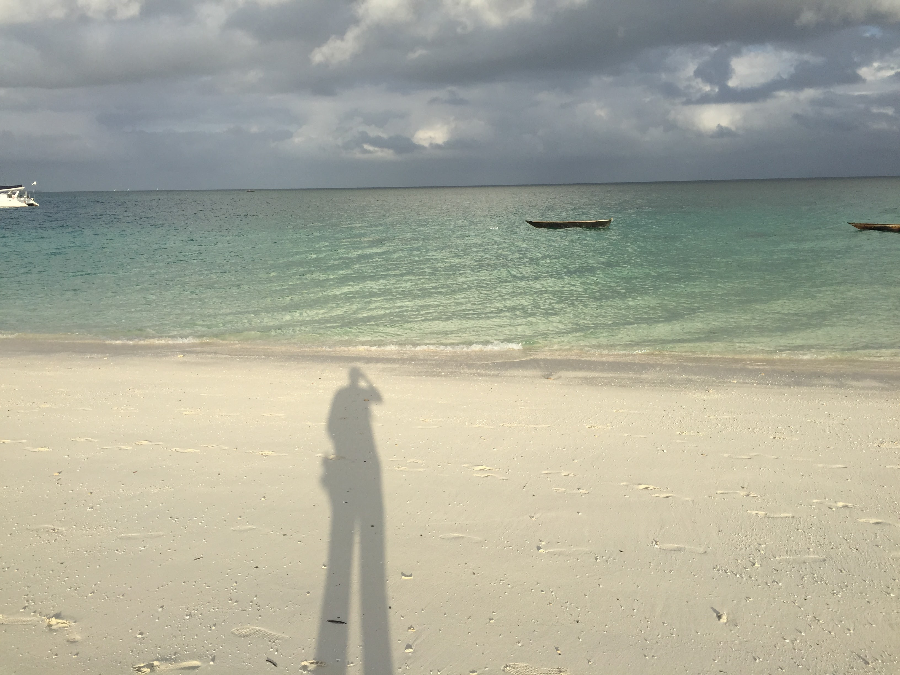
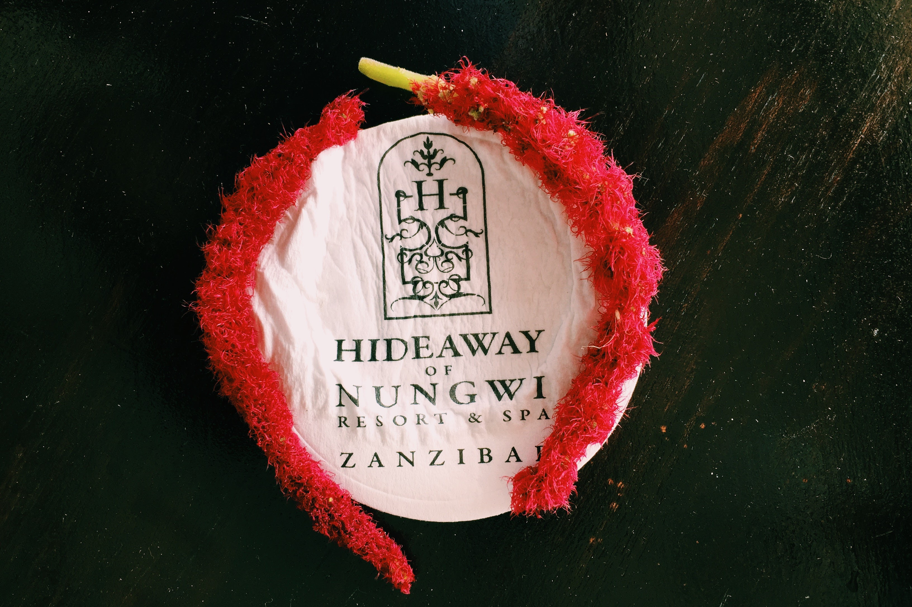